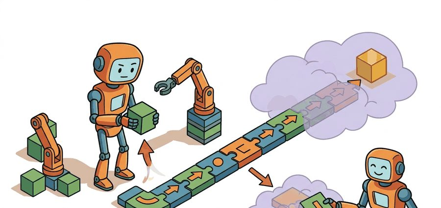
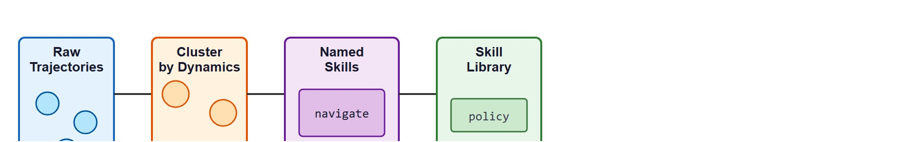
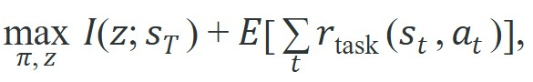
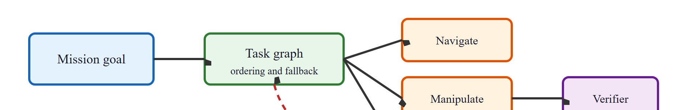

"The most useful skills are the ones nobody thought to name in advance."
A Surprised Skill Designer

Figure 26.3A previews the full pipeline: subgoal states, per-subgoal option policies, and the meta-controller that selects among them. This section assumes familiarity with the options framework introduced in section 26.2, particularly the initiation set, internal policy, and termination condition that define an option. The skill-discovery and hierarchical RL ideas developed here feed directly into section 26.4, where language models take the role of the meta-controller that selects and sequences skills. The same skill-contract vocabulary recurs in Part VI alongside task-and-motion planning, where feasibility checkers replace the reward-based verification used here.
A robot trained on millions of steps to reach a single goal fails the moment the goal shifts by half a meter. The same robot, if it had first discovered reusable locomotion and manipulation behaviors, could stitch them into a new plan in seconds. That is the promise of skill discovery and hierarchical RL: let the agent carve experience into named, reusable chunks before any final task is specified, then compose those chunks at planning time. With foundation models now acting as meta-controllers (the high-level policy that selects and sequences which pretrained skill to run next, rather than choosing raw motor torques) selecting among skill libraries on real hardware (as of 2024), this two-level structure has moved from theory to production. You will build the full pipeline: unsupervised skill discovery, the options framework contract, and a hierarchical controller that sequences skills to solve tasks flat RL cannot.
A quadruped that has spent millions of steps mastering one exact route across one exact floor will sprawl helplessly the instant a chair blocks its path, yet a robot that first carved that same experience into a handful of named behaviors (walk, turn, recover-from-fall) can replan around the chair before its servos cool. Hierarchy is what separates timing, contact, recovery, and sequencing so a high-level planner can select among those behaviors without pretending every low-level policy is deterministic.
Skill discovery asks whether useful behaviors can be learned before the final task reward is known: ETH Zürich's ANYmal quadruped, for instance, learns a repertoire of recovery and gait behaviors in Isaac Gym that it never explicitly requested for any single deployment. Hierarchical RL then decides how to select and compose those behaviors for a downstream objective, the way the affordance-scored skill library of language-as-a-high-level-controller lets a Google Everyday Robots mobile manipulator pick "find a sponge" then "wipe the spill" from hundreds of pretrained primitives rather than relearning torques for each kitchen.
A skill library without named, verifiable behaviors is not a library; it is a pile of trajectories waiting for a task that may never arrive. Figure 26.3.C below traces this pipeline from raw trajectories to a named skill library.

Consider a specific case. The DIAYN algorithm ("Diversity Is All You Need," Eysenbach et al., 2018, a method that discovers skills by rewarding the agent for reaching states that reveal which skill is running) trains a MuJoCo half-cheetah agent with no task reward at all. Over 2 million environment steps it discovers roughly 50 distinguishable locomotion behaviors, each labeled by a latent code $z$. A downstream controller then trains for only 200,000 additional steps and selects among those pre-discovered behaviors to reach a target velocity. Without the skill library, a flat RL agent needs far more steps for the same target. In the DIAYN paper's velocity-tracking transfer experiment, the flat baseline typically needed roughly 50,000 downstream episodes to reach the performance the skill-conditioned agent matched in under 300. That is on the order of a 160x reduction in this particular experiment (results vary by task and seed), because the meta-controller searched over 50 named behaviors instead of the full joint-torque space. This two-phase structure is the core argument for hierarchical RL: hard exploration problems become easier when the search space shrinks to named skills, measured in dozens rather than millions of individual motor commands.
When using DIAYN, the number of latent skill codes n is the single parameter most practitioners set too low. Start with n = 50 for locomotion tasks and n = 100+ for manipulation, then audit the discovered library with a nearest-neighbor coverage plot before training the downstream selector. If two codes produce visually identical trajectories the library is under-parameterized and more diverse skills can be obtained simply by increasing n rather than changing the reward or architecture. The DIAYN reference implementation in the authors' SAC codebase exposes this as --num_skills.
For Skill discovery and hierarchical RL, treat the skill as an interface: initiation set, internal controller, progress signal, termination rule, verifier, and recovery status must be explicit.
A skill without an explicit initiation set is like a contractor who shows up only when they feel ready: technically capable, impossible to schedule, and deeply confused by the concept of a deadline.
If a skill is only useful once it can be named, verified, and selected, then the discipline lies in pinning down exactly what each of those guarantees means: that is what the option tuple formalizes.
For Skill discovery and hierarchical RL, use the option tuple as an audit checklist: initiation states, internal policy, termination probability, and verifier must match the robot task. The Option-Critic architecture (Bacon et al., 2017), a method that learns the option's internal policy and termination function together by backpropagating through both, learns these fields end-to-end by differentiating through the termination function, while systems like SayCan (Ahn et al., 2022), a robot system that pairs a language model's skill suggestions with a learned feasibility score, ground the same tuple in a pre-built skill library where each entry carries an affordance score (a learned estimate of how likely a skill is to succeed from the current state) derived from a value function trained on real robot data. Both approaches expose the same checklist; they differ only in whether the fields are hand-specified or gradient-trained.
The combined skill-discovery and task objective makes this contract concrete. The expression below maximizes two terms at once: a diversity term that rewards skills for being distinguishable, plus the usual task return.

Here $z$ is the latent skill code, the discrete or continuous label that identifies which skill is running. The terminal state the skill reaches is $s_T$, and $I(z;s_T)$ is the mutual information between them. This mutual information measures how reliably you can infer which skill ran just by looking at where it ended up. Maximizing $I(z;s_T)$ pushes different skill codes toward visibly different outcomes, which is exactly the DIAYN diversity signal. The second term $\mathbb{E}[\sum_t r_{\mathrm{task}}]$ adds the downstream task reward so the discovered skills also stay useful.
So far: a skill's option tuple (initiation, policy, termination, verifier) can be hand-specified as in SayCan or learned end-to-end as in Option-Critic, and the DIAYN objective formalizes the discovery half of that tuple by rewarding skills whose terminal states reveal which latent code produced them.
For Skill discovery and hierarchical RL, map the option fields onto behavior trees, task graphs, finite-state machines, or task-and-motion planning nodes so start, act, stop, and verify remain inspectable. Figure 26.3.B shows this mapping end to end, from mission goal through the task graph to individual verified skills.

Code Fragment 1 for Skill discovery and hierarchical RL should expose initiation, progress, termination, verification, and failure reporting before connecting the skill to ROS 2, BehaviorTree.CPP, Drake, or a learned policy.
# Cluster short trajectory summaries into candidate skills.
# This toy discovery pass groups behaviors by displacement and contact evidence.
import numpy as np
summaries = np.array([
[1.0, 0.0, 0.0],
[0.9, 0.1, 0.0],
[0.0, 0.0, 1.0],
[0.1, 0.0, 0.9],
])
skill_names = []
for forward, lateral, contact in summaries:
if contact > 0.5:
skill_names.append("manipulate")
elif forward > 0.5:
skill_names.append("navigate")
else:
skill_names.append("unknown")
print(skill_names)The expected output is only useful because each cluster now has a stable semantic label. A higher-level controller can select navigate or manipulate as reusable skills, whereas unlabeled embeddings would still be hard to schedule or verify.
Trace the mutual-information signal $I(z;s_T)$ with three skills and one batch of rollouts. Suppose the discriminator (a small classifier trained alongside the policy to guess the skill code from the outcome state) $q_\phi(z \mid s_T)$ is asked to guess which skill code produced each terminal state. Skill $z=0$ ends at $s_T=(\text{x}{=}3.0)$, skill $z=1$ at $s_T=(\text{x}{=}{-}2.8)$, and skill $z=2$ at $s_T=(\text{x}{=}0.1)$. The discriminator returns probabilities for the true code of $q(0\mid s)=0.90$, $q(1\mid s)=0.85$, $q(2\mid s)=0.40$ (skill 2 sits near the origin where it overlaps the others). With a uniform prior $p(z)=1/3$, the per-skill DIAYN pseudo-reward is $r = \log q_\phi(z\mid s_T) - \log p(z) = \log q - \log(1/3)$. Skill 0: $\log 0.90 - \log 0.333 = -0.105 + 1.099 = 0.994$. Skill 1: $\log 0.85 + 1.099 = -0.163 + 1.099 = 0.936$. Skill 2: $\log 0.40 + 1.099 = -0.916 + 1.099 = 0.183$. The agent is rewarded most for skills 0 and 1 (clearly separable) and barely for skill 2, so gradient ascent pushes skill 2's terminal state away from the origin until the discriminator can tell it apart. The discovery loop is just this reward, fed to SAC, repeated until every skill earns a high score.
Once the verified-execution loop above is in place, the remaining work is disciplined bookkeeping: the steps below turn that single-skill contract into a repeatable procedure for building and sequencing a whole library.
navigate_to_station, grasp_handle, dock_drone, or change_lane.For Skill discovery and hierarchical RL, use BehaviorTree.CPP, ROS 2 lifecycle nodes, Drake systems, or task-and-motion planning to handle scheduling and fallback while preserving explicit skill contracts.
For Skill discovery and hierarchical RL, decompose the household command into navigation, inspection, reachability, grasp, carry, and handoff only if each subskill exposes a verifier and recovery route.
| Field | Question | Example For A Mobile Manipulator |
|---|---|---|
| Initiation | When may it start? | Object detected, arm clear, base within reach. |
| Policy | What controller runs? | Visual servoing plus impedance control. |
| Termination | When does it stop? | Grasp force stable for 0.5 seconds. |
| Verification | How is success proved? | Object pose follows gripper during lift. |
| Recovery | What happens after failure? | Open gripper, re-localize, retry from a safer pose. |
What actually goes wrong when a termination rule fires a half-second too late on a physical arm carrying a full coffee cup?
The termination condition deserves special attention because it determines when the high-level planner regains control. On a physical robot, a termination rule that fires too early hands a half-finished state to the next skill; one that fires too late holds actuators under load past safe limits, causing joint overheating or object slippage. These failures are silent in simulation because MuJoCo has no thermal model and contacts are assumed ideal.
Mechanically, $\beta(s) \in [0,1]$ is a learned or hand-coded function giving the probability of ending the option at state $s$. The policy samples it every timestep, and $\beta(s) \approx 1$ releases control. Option-Critic trains $\beta$ from downstream-return gradients, so states near a subgoal push it toward 1. Sensor-grounded hard overrides on force, time, and pose error keep $\beta$ from staying near 0 when the policy is stuck.
Think of $\beta(s)$ as the moment a cook decides a sauce is done reducing. The cook does not check a fixed timer; instead, she continuously samples the pot, and when the texture, color, and aroma all signal "ready," she pulls it off the heat and hands control to the next step (plating). A termination function works the same way: it samples the robot's state at every timestep and, when enough evidence accumulates that the current skill has reached a good stopping point, it fires and returns control to the meta-controller. Just as a cook also keeps a hard rule ("never exceed 20 minutes"), sensor-grounded safety overrides act as the hard deadline that prevents the policy from simmering forever.
A common assumption is that unsupervised skill discovery (for example, DIAYN) automatically produces skills that will be useful for whatever downstream task is specified later. This is wrong in the embodied AI context: discovered skills reflect the geometry of the state space that was reachable during pre-training, not the structure of the target task. A MuJoCo half-cheetah trained with no reward may discover 50 distinguishable locomotion gaits, yet none of them corresponds to "stop precisely at a marked location" if that subgoal was rarely visited during exploration. The correct mental model is that unsupervised discovery gives you a diverse vocabulary of behaviors, but the downstream meta-controller still needs sufficient coverage in the skill library, a grounded affordance score, and real verification that each discovered skill can actually be initiated in the states the task will encounter.
The most common composition failure is a postcondition mismatch at a skill boundary: skill A reports success when the grasped object is "stable for 0.5 s," but skill B's initiation predicate expects the object centroid to be within 2 cm of a reference pose in the wrist frame. If the grasp succeeded at a rotated angle, both checks pass individually yet the handoff fails immediately. This class of bug does not appear in per-skill unit tests; it only surfaces when the two skills are sequenced on real hardware with object pose variance. The fix is to log the full state vector at every skill boundary during testing and audit whether the postcondition of each skill is a strict subset of the initiation conditions of every skill that follows it in the task graph.
Foundation-model skill libraries with open-vocabulary grounding. The 2024-2025 wave of vision-language-action models has shifted skill discovery from latent-code clustering toward language-indexed libraries that any instruction can query. OpenVLA (Kim et al., 2024, Stanford) fine-tunes a 7B VLA on the Open X-Embodiment dataset and shows that skills verbally labeled at collection time transfer zero-shot to novel objects with no additional RL, directly addressing the vocabulary coverage gap left by DIAYN-style discovery.
Offline skill stitching from large robot datasets. Rather than discovering skills online, recent work extracts and stitches reusable sub-trajectories from passive datasets. GROOT (Wang et al., 2024, UT Austin) segments demonstration videos into object-centric skill segments using a masked world model, then composes segments at test time without any task-specific reward signal. This collapses the two-phase (discover then compose) pipeline into a single offline pass over heterogeneous robot data, which matters practically because online RL is expensive on physical hardware.
Skill boundary synchronization for high-frequency robot control. As VLA-based meta-controllers call skills at 3-10 Hz on real arms, the mismatch between planning latency and sensor polling rates causes postcondition checks to be stale at handoff. Research at Google DeepMind in the context of RT-2-X follow-ons (2024) explores timestamp-aligned skill contracts where the verifier and the planner share a common sensor event bus rather than wall-clock polling, reducing boundary failures under object-pose variance.
Open problem for PhD students: Current skill-discovery methods produce libraries whose coverage is implicitly shaped by the initial state distribution of pre-training. When a downstream task requires a skill that was never near-visited during exploration, no amount of meta-controller training recovers it. A tractable open problem is to design an active coverage criterion, one that measures gaps between the discovered skill library and the initiation sets implied by a natural-language task description, and then directs targeted online exploration to fill those gaps without retraining the entire library.
Google's SayCan system runs on Everyday Robots hardware in real office micro-kitchens, where a language model proposes candidate skills ("pick up the sponge," "go to the trash can") and an affordance value function, trained on real robot rollouts, scores how feasible each skill is from the current state. The product of language likelihood and affordance score selects the next skill from a library of roughly 550 pretrained primitives, letting the robot complete long multi-step requests like "I spilled my drink, can you help?" without retraining a single low-level controller.
For Skill discovery and hierarchical RL, the test is whether initiation set, internal policy, termination rule, verifier, and recovery route can be written for the target robot skill.
Skill discovery and hierarchical RL is useful when it makes the perception-action loop more reliable, not when it merely adds a more impressive model name.
Design a method-matched experiment for Skill discovery and hierarchical RL. Specify the environment, observation schema, action interface, metric, and one perturbation that targets the section's core assumption.
Goal: see unsupervised skill discovery firsthand and feel how the skill count controls diversity. In 15 to 30 minutes you will train a DIAYN-style agent and inspect the behaviors it invents without ever giving it a task reward.
Tools needed: Python with gymnasium[mujoco] and stable-baselines3, plus a small DIAYN wrapper (the reference implementation in the authors' SAC codebase or any community port). Use HalfCheetah-v4 as the environment.
What to vary: set the number of latent skill codes to n = 5, then n = 20, then n = 50, keeping all other hyperparameters fixed. Train each for a short budget (200k to 500k steps is enough to see structure).
What to observe: render one rollout per latent code and watch how the cheetah moves for each $z$. With small n the skills are crisp and distinct (run forward, run backward, flip); as n grows you will start to see near-duplicate gaits, the under-parameterization signature from the Tip above. Plot the discriminator accuracy $q_\phi(z\mid s_T)$ per skill and confirm that the duplicates are exactly the codes the discriminator confuses. The takeaway you should leave with: diversity is not free, and the right n is the one where every skill still earns a high discriminator score.
Beginner (weekend): Run DIAYN on a MuJoCo HalfCheetah environment using the Gymnasium MuJoCo interface and visualize the discovered skill library by rendering trajectories for each latent code side by side. The key challenge is tuning the number of skill codes so that neighboring codes produce visually distinct gaits without collapsing to a handful of duplicates.
Intermediate (1 to 2 weeks): Build a two-level hierarchical controller in Isaac Lab where a high-level policy selects among three hand-specified option policies (navigate, grasp, place) and a low-level verifier checks postconditions at each skill boundary before the next option is initiated. The key challenge is writing the boundary verifier so that it catches the postconditon-to-initiation mismatches that only appear when skills are sequenced, not when each is tested in isolation.
Intermediate (1 to 2 weeks): Implement the Option-Critic architecture with LeRobot on a tabletop push task, letting the termination function be learned end to end alongside the intra-option policy, then compare flat Proximal Policy Optimization (PPO) against the two-level version on sample efficiency. The key challenge is stabilizing the learned termination function so it does not collapse to a single option for the entire episode.
This section grounded skill discovery and hierarchical rl in an explicit robot-data contract: observations, actions, demonstrations, evaluation splits, and failure labels. The next reading step is Section 26.4, where the same contract is carried into the next technique or chapter.
Eysenbach, B. et al. (2018). Diversity is All You Need: Learning Skills Without a Reward Function.
DIAYN studies unsupervised skill discovery by maximizing distinguishable behaviors. It is useful for understanding when skills can be learned before a downstream task is specified.
Bacon, P. L., Harb, J., and Precup, D. (2017). The Option-Critic Architecture.
Option-Critic learns options end to end within reinforcement learning. It helps readers compare hand-specified skills with learned temporal abstractions.
This paper formalizes options as temporally extended actions with initiation, policy, and termination conditions. It is the canonical reference for the chapter's skill hierarchy vocabulary.
Open X-Embodiment and RT-X Project Website.
Cross-embodiment datasets make skill reuse a practical question rather than only a theory topic. The project helps readers connect hierarchy to robot foundation models and shared behavior repertoires.
BehaviorTree.CPP Documentation.
Behavior trees are a production-friendly way to compose skills with fallback and monitoring logic. They complement learned policies by making high-level task decomposition explicit and inspectable.